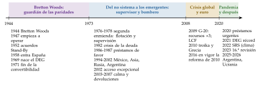
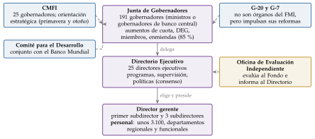
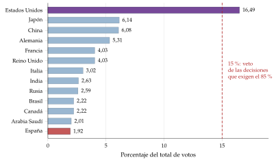
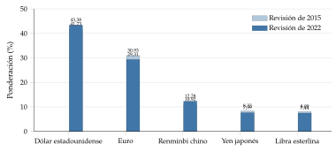
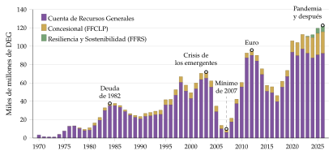
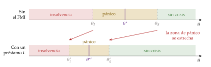

Tema 3.B.22
El Fondo Monetario Internacional. Estructura y políticas. La prevención y solución de crisis.
Historia, gobierno, cuotas, votos y DEG del FMI; supervisión, préstamos y condicionalidad; financiación catalítica, reservas y programación financiera.
Exclusivo Material exclusivo de victorgutierrezmarcos.es y la app Oposición TCEE · DCE. Puedes usarlo libremente para tu estudio personal. No se autoriza su incorporación a otras plataformas, aplicaciones o servicios. Condiciones de uso.
Introducción
Enganche:
«Más vale prevenir que curar», dice el refrán, y el Fondo Monetario Internacional (FMI) lleva 80 años intentando hacer las 2 cosas con los desequilibrios exteriores de sus miembros.
En abril de 2025 el FMI aprobó para Argentina un préstamo de 20.000 millones de dólares, casi 5 veces su cuota. Hoy Argentina le debe unos 42.000 millones de derechos especiales de giro: casi la mitad de todo lo que el Fondo tiene prestado en su cuenta general. Es el país que más veces ha acudido al Fondo: siempre para curar, nunca a tiempo para prevenir.
La pregunta que recorre la exposición es: ¿puede una institución internacional evitar que los países caigan en crisis de balanza de pagos, o solo puede curarlas cuando ya han estallado, y a qué precio?
Relevancia:
Es casi universal: tiene 191 países miembros y es el único organismo que vigila cada año la política económica de casi todos ellos.
Es el centro de la red de seguridad financiera mundial: puede prestar en torno a 1 billón de dólares, y en las crisis recientes (2008-2010, la zona del euro, la pandemia) llegó a tener programas con decenas de países a la vez [ver tema 3.B.26].
Para España: es miembro desde 1958; el Plan de Estabilización de 1959 se diseñó con el FMI y la OECE [ver tema 4.A.27], y en 2012 el FMI vigiló, como asesor técnico, el programa de asistencia a la banca española, financiado con fondos europeos (primero la Facilidad Europea de Estabilidad Financiera y después el Mecanismo Europeo de Estabilidad, MEDE) [ver tema 4.A.18] [ver tema 4.A.28].
Para la política económica: sus informes (las perspectivas de la economía mundial, el informe de estabilidad financiera, las consultas del artículo IV) son la referencia de los diagnósticos de coyuntura, y su marco de análisis, el de cualquier dictamen [ver tema 3.B.11].
Contextualización:
Qué es: el FMI es una organización internacional creada por un tratado, el Convenio Constitutivo, firmado en la conferencia de Bretton Woods (New Hampshire) en julio de 1944 por 44 países [ver tema 3.B.20]. Es un organismo especializado de las Naciones Unidas con plena independencia funcional, y su sede está en Washington.
Sus siglas lo definen:
es un fondo: un depósito de recursos que aportan los miembros según su cuota y que se presta a quien tiene problemas de balanza de pagos, del orden de 1 billón de dólares;
es monetario: sus recursos vienen de los bancos centrales y sus préstamos van a reforzar las reservas, no a financiar proyectos (eso lo hace el Banco Mundial [ver tema 3.B.30]);
es internacional: un tratado le da personalidad jurídica, y su personal goza de inmunidades.
Sus fines: el artículo I del Convenio le encarga fomentar la cooperación monetaria internacional, facilitar el comercio, la estabilidad cambiaria y un sistema multilateral de pagos, y prestar a los miembros con problemas de balanza de pagos para que los corrijan «sin recurrir a medidas perniciosas para la prosperidad nacional o internacional».
El problema que resuelve: una crisis de balanza de pagos es la situación en que un país deja de poder financiar su déficit exterior o atender su deuda exterior a los precios vigentes y tiene que ajustar de golpe (perder reservas, devaluar, dejar de pagar o recortar el gasto) [ver tema 3.B.17]. El FMI existe para que ese ajuste sea más ordenado y no se contagie a los demás.
La red de seguridad financiera mundial (global financial safety net): es el conjunto de defensas de un país ante una parada súbita del capital. Tiene 4 capas: las reservas propias, las líneas swap entre bancos centrales, los acuerdos financieros regionales (el MEDE, la Iniciativa Chiang Mai) y, en el centro, el FMI.
Problemática:
¿Cómo se gobierna el FMI y de dónde salen sus recursos?
¿Qué hace: vigilar, asesorar, prestar?
¿Puede prevenir las crisis y cómo ayuda a resolverlas?
¿A qué coste: riesgo moral, ajustes dolorosos, legitimidad?
Estructura:
La exposición va de lo que el FMI es a lo que hace y, por último, a para qué lo hace: prevenir y resolver crisis.
I. Estructura (I): su historia en lo imprescindible, su marco jurídico y su organización, de gobierno y financiera.
II. Políticas (II): la supervisión, la asistencia técnica y la financiación.
III. Prevención y solución de crisis (III): por qué presta un organismo internacional, cómo previene (vigilancia, reservas, líneas precautorias), cómo resuelve (el programa y sus documentos), qué efectos tienen sus programas y qué cabe criticarle.
3.B.22. El Fondo Monetario Internacional. Estructura y políticas. La prevención y solución de crisis
Introducción2′30″
I. Estructura8′30″
1. Evolución histórica
2. Marco jurídico
3. Marco institucional
II. Políticas8′30″
1. Política de supervisión
2. Política de asistencia técnica
3. Política financiera
III. Prevención y solución de crisis9′30″
1. Idea: el FMI como prestamista internacional
2. La prevención
3. La solución: los documentos del programa
4. Consecuencias sobre los países con programa
5. Valoración
Conclusión1′
Reparto del cante: introducción, 2′30″; I, 8′30″ (I.1, 2′30″; I.2, 1′30″; I.3, 4′30″); II, 8′30″ (II.1, 3′; II.2, 1′; II.3, 4′30″); III, 9′30″ (III.1, 2′; III.2, 2′; III.3, 3′30″; III.4, 1′; III.5, 1′), y conclusión, 1′. La historia se cuenta solo en lo que explica el FMI de hoy: el sistema monetario internacional es materia de otros temas. Las fórmulas que conviene escribir son 3: la de los votos, el techo de crédito interno de la programación financiera y la métrica de adecuación de las reservas. Los gráficos imprescindibles son el de los votos (el veto de Estados Unidos), el del crédito vivo del FMI, que dibuja las oleadas de crisis, y el de las 3 regiones de la financiación catalítica. Lo que va en cajas grises, en notas y en los anexos es para las preguntas del tribunal.
Notación. \(R\) son las reservas internacionales, \(\mathrm{CI}\) el crédito interno neto del banco central (o del sistema bancario) y \(M\) la cantidad de dinero, como en el resto del temario; en la programación financiera, las importaciones se escriben \(m\,PY\), con \(m\) la propensión a importar y \(PY\) la renta nominal, para no confundirlas con el dinero. \(k\) es la \(k\) de Cambridge (la inversa de la velocidad del dinero). \(\theta\) es, solo en el apartado III.1, el estado de los fundamentos del país; \(D\) su deuda a corto plazo y \(L\) el préstamo del FMI. Las cantidades del FMI se dan en derechos especiales de giro (DEG), su unidad de cuenta, con su equivalencia aproximada en dólares.
I. Estructura
Empezamos por lo que el FMI es: de dónde viene, qué reglas lo obligan y cómo se gobierna y se financia.
Conclusión anticipada: el FMI nació para vigilar un sistema de tipos fijos y ha sobrevivido a su desaparición reinventándose como supervisor y prestamista de las crisis. Su gobierno sigue el principio del accionista: cuanto más aporta un país, más vota, y Estados Unidos conserva el veto en las grandes decisiones.
I.1. Evolución histórica
Nexo: la historia del sistema monetario internacional tiene sus propios temas [ver tema 3.B.20] [ver tema 3.B.21]. Aquí basta lo que explica cómo el FMI ha cambiado de funciones: 4 etapas, cada una abierta por una crisis.
I.1.1. Bretton Woods (1944-1973): el guardián de las paridades
El contexto: las devaluaciones competitivas y los controles de cambios de entreguerras habían hundido el comercio. En Bretton Woods se pactó un sistema de tipos de cambio fijos pero ajustables: cada moneda fijaba su paridad frente al dólar, y el dólar era convertible en oro a 35 dólares la onza para los bancos centrales [ver tema 3.B.20].
2 planes: el de John Maynard Keynes, una unión de compensación con una moneda propia (el bancor) y obligaciones de ajuste también para los países con superávit, y el de Harry Dexter White, un fondo de recursos limitados aportados por cuotas. Ganó, en lo esencial, el de White: el ajuste recayó sobre los deudores.1
Las funciones del FMI:
vigilar las paridades: los miembros solo podían cambiarlas ante un desequilibrio fundamental, término que el Convenio nunca definió; hasta un 10 % bastaba con consultar al Fondo, y más allá hacía falta su conformidad;
prestar: financiar desequilibrios temporales para que el ajuste no exigiera deflación ni controles.
Los hitos:
1952: nacen los acuerdos de derecho de giro (Stand-By Arrangements), y desde mediados de los 50 llevan condiciones de política económica: nace la condicionalidad;
1962: los Acuerdos Generales para la Obtención de Préstamos (AGP), con los que el G-10 refuerza los recursos del Fondo;
1969: la primera enmienda crea los derechos especiales de giro (DEG), un activo de reserva para que la liquidez mundial no dependiera del déficit de Estados Unidos (el dilema de Triffin) [ver tema 3.B.20];
1971-1973: Estados Unidos suspende la convertibilidad del dólar (15 de agosto de 1971) y, tras el Acuerdo Smithsonian, las principales monedas flotan en 1973. El FMI pierde su primera función.
I.1.2. Del no sistema a las crisis emergentes (1973-2007): el bombero
La segunda enmienda (Jamaica, 1976; en vigor en 1978) legaliza la flotación: cada miembro elige su régimen cambiario, salvo fijar su moneda al oro, y el FMI pasa a ejercer una supervisión firme (firm surveillance) de sus políticas (artículo IV).
Las crisis de los emergentes hacen del FMI un prestamista de crisis:
la crisis de la deuda de 1982: el reciclaje de los petrodólares y la subida de tipos de Paul Volcker llevan a México y a América Latina al impago; el FMI presta con programas de ajuste y coordina a los bancos acreedores [ver tema 3.B.29];
para los países de renta baja crea préstamos en condiciones de favor: el Servicio de Ajuste Estructural (1986) y el Reforzado (1987), antecedentes del fondo para la reducción de la pobreza de hoy;
tras 1989, las economías en transición del antiguo bloque soviético se hacen miembros;
la década de las crisis de capital: México (1994), Asia (1997), Rusia (1998), Brasil (1999), Turquía y Argentina (2001). Los préstamos son mucho mayores que la cuota y el FMI crea en 2002 el marco de acceso excepcional, con criterios para prestar por encima de los límites [ver tema 3.B.17].
La calma de 2003-2007: los emergentes acumulan reservas para no volver a necesitar al Fondo, los grandes deudores (Brasil, Argentina) le devuelven por adelantado lo que deben y su crédito vivo cae al mínimo en décadas (gráfico 3). Se llegó a dudar de su utilidad.
I.1.3. La crisis financiera y la del euro (2008-2019): el regreso
La crisis global vuelve a hacer central al FMI. En la cumbre de Londres de abril de 2009, el G-20 decide triplicar sus recursos, hasta 750.000 millones de dólares, y una asignación de DEG de unos 250.000 millones [ver tema 3.B.19].
Nuevos instrumentos: la línea de crédito flexible (2009) y la de precaución (2010-2011), pensadas para prevenir y no solo curar (apartado III.2).
La reforma de 2010 (14.ª revisión de cuotas): duplica las cuotas y traslada más del 6 % del poder de voto hacia los emergentes; China pasa a ser el tercer miembro. Por la tardanza del Congreso de Estados Unidos, no entró en vigor hasta enero de 2016.
La crisis del euro: el FMI presta, por primera vez en décadas, a economías avanzadas (Islandia en 2008, Grecia e Irlanda en 2010 y Portugal en 2011), dentro de la troika con la Comisión Europea y el BCE [ver tema 3.B.16].2
Para prestar a Grecia en 2010 una cantidad sin precedentes, unos 30.000 millones de euros, más de 30 veces su cuota, el FMI introdujo una excepción sistémica: podía prestar aunque la deuda no fuera sostenible con alta probabilidad si había riesgo de contagio a otros países. La deuda se reestructuró en 2012 y la excepción se suprimió en 2016.
I.1.4. De la pandemia a hoy (2020-2026): un fondo para todo
La pandemia: el FMI duplica los préstamos de emergencia, alivia con donaciones el servicio de la deuda de los miembros más pobres con el Fondo Fiduciario para Alivio y Contención de Catástrofes (FFACC) y, en agosto de 2021, aprueba la mayor asignación de DEG de su historia, unos 456.000 millones (unos 650.000 millones de dólares) [ver tema 3.B.29].
Nuevas tareas: el clima (el Servicio de Resiliencia y Sostenibilidad, de 2022) [ver tema 3.B.31], la deuda de los países de renta baja (la Mesa Redonda Global sobre la Deuda Soberana, de 2023) y la guerra en Ucrania, con el primer programa del FMI para un país en guerra (2023), sustituido en febrero de 2026 por un SAF de unos 8.100 millones de dólares.
Las tensiones: en abril de 2025, el secretario del Tesoro de Estados Unidos, Scott Bessent, pidió «hacer que el FMI vuelva a ser el FMI»: menos clima y género y más balanza de pagos. Estados Unidos sigue sin autorizar el aumento de cuotas de 2023 (I.3.2), y en las Reuniones Anuales de Bangkok (octubre de 2026) solo hubo una declaración de la presidencia del Comité Monetario y Financiero Internacional, sin comunicado.
Recapitulación del I.1: el FMI ha pasado de guardián de unas paridades a supervisor universal y bombero de las crisis, y de prestar a países ricos a prestar sobre todo a emergentes y a países de renta baja, salvo en 2010-2015 (figura 1).

I.2. Marco jurídico
La norma: el Convenio Constitutivo, en vigor desde el 27 de diciembre de 1945 (el Fondo empezó a operar el 1 de marzo de 1947), enmendado 7 veces. Como es un tratado internacional, cada enmienda la tienen que aceptar 3/5 de los miembros que tengan el 85 % de los votos.
Los 6 fines (artículo I):
fomentar la cooperación monetaria internacional mediante una institución permanente de consulta y colaboración;
facilitar la expansión y el crecimiento equilibrado del comercio internacional, y contribuir así a altos niveles de ocupación y de renta real;
fomentar la estabilidad cambiaria, procurar regímenes de cambios ordenados y evitar las depreciaciones competitivas;
coadyuvar a un sistema multilateral de pagos para las transacciones corrientes y eliminar las restricciones cambiarias que frenan el comercio;
infundir confianza a los miembros poniendo a su disposición, temporalmente y con garantías adecuadas, los recursos generales del Fondo, para que corrijan sus desequilibrios de balanza de pagos sin medidas perniciosas para la prosperidad nacional o internacional;
acortar la duración y aminorar el grado de desequilibrio de las balanzas de pagos.
El peso de cada fin ha cambiado: bajo Bretton Woods mandaba la estabilidad de las paridades (fin 3); desde los 80, la financiación de los desequilibrios y la cooperación (fines 1, 5 y 6).
Las obligaciones de los miembros:
artículo IV: colaborar con el Fondo para un sistema de tipos de cambio estable, no manipular el tipo de cambio para impedir el ajuste o ganar una ventaja competitiva injusta, y someterse a su supervisión;
artículo VIII: no restringir los pagos por transacciones corrientes ni discriminar entre monedas; un miembro puede acogerse temporalmente al régimen de transición del artículo XIV;
artículo VI: los controles de los movimientos de capital sí están permitidos, y el Fondo no puede prestar para financiar una salida de capitales grande y sostenida. Desde 2012, la Visión institucional admite las medidas de gestión de los flujos en ciertas circunstancias, y su revisión de 2022 añade las medidas preventivas frente al riesgo sistémico [ver tema 3.B.15];
artículo VIII, sección 5: facilitar al Fondo la información estadística que pida. Si un miembro no la da o da datos falsos, el Fondo puede declararlo, limitarle el acceso a sus recursos y, en último extremo, expulsarlo (artículo XXVI).
Las sanciones existen, pero casi no se usan
En 2013 el FMI emitió una declaración de censura contra Argentina por la mala calidad de sus estadísticas de inflación y de PIB, que se levantó en 2016, cuando el país las corrigió.
Grecia había comunicado en 2009 un déficit público del 3,7 % del PIB, que acabó siendo de más del 15 %: Eurostat y el FMI llevaban años pidiendo mejores estadísticas [ver tema 3.B.45].
Ningún miembro ha sido expulsado; Checoslovaquia tuvo que retirarse en 1954, tras negarse a dar información, y volvió en 1990.
I.3. Marco institucional
Nexo: con el marco jurídico, pasamos a la organización: quién decide (estructura organizativa) y con qué dinero (estructura financiera).
I.3.1. Estructura organizativa
El FMI tiene 3 niveles de decisión y 2 órganos que lo asesoran o lo evalúan (figura 2).

La Junta de Gobernadores
Composición: un gobernador y un suplente por país, normalmente el ministro de Economía o el gobernador del banco central.3
Funciones: es el órgano supremo. Delega casi todo en el Directorio Ejecutivo, pero se reserva lo esencial: aumentar las cuotas, asignar DEG, admitir o suspender miembros y enmendar el Convenio.
Votación: por mayoría de los votos emitidos, salvo las grandes decisiones, que exigen una mayoría reforzada del 85 % del total de votos. Como Estados Unidos tiene más del 15 %, tiene veto sobre ellas.
Reuniones: una vez al año, en las Reuniones Anuales con el Banco Mundial (2 de cada 3 años en Washington), y vota a distancia cuando hace falta.
Los comités ministeriales
El Comité Monetario y Financiero Internacional (CMFI), heredero del Comité Interino de 1974: 25 gobernadores, con la misma composición por grupos que el Directorio. Asesora a la Junta y, en la práctica, fija las líneas estratégicas del Fondo en sus comunicados de primavera y otoño. Lo preside desde enero de 2024 el ministro de Finanzas de Arabia Saudí, Mohammed Aljadaan, que sucedió a la española Nadia Calviño (2022-2023).4
El Comité para el Desarrollo, conjunto con el Banco Mundial, asesora sobre los problemas de los países en desarrollo [ver tema 3.B.30].
El G-20 y el G-7, aunque no son órganos del FMI, marcan sus grandes reformas (Londres en 2009, Seúl en 2010), y la directora gerente asiste a sus reuniones [ver tema 3.B.19].
El Directorio Ejecutivo
Composición: 25 directores ejecutivos, desde noviembre de 2024, cuando se añadió una tercera silla para el África subsahariana. Los mayores accionistas (Estados Unidos, Japón, China, Alemania, Francia y el Reino Unido) tienen un director propio; los demás países se agrupan en sillas de varios países, que eligen a su director y suelen rotarlo. España comparte la sexta silla por tamaño con México, Colombia, Costa Rica, El Salvador, Guatemala y Honduras, y hoy la ocupa una española, Xiana Méndez.
Funciones: lleva el día a día: aprueba los programas y sus revisiones, discute las consultas del artículo IV y decide las políticas del Fondo. Se reúne varias veces por semana, en sesión permanente.
Votación: formalmente por mayoría de los votos emitidos (85 % en las decisiones reservadas), pero en la práctica por consenso: rara vez se vota.
La Gerencia y el personal
El director gerente: lo elige el Directorio por 5 años renovables y preside el Directorio (sin voto, salvo en caso de empate) y dirige al personal. Por un acuerdo no escrito, es europeo, y el presidente del Banco Mundial, estadounidense. Desde octubre de 2019 es la búlgara Kristalina Georgieva, en su segundo mandato desde octubre de 2024; la asisten un primer subdirector gerente, por tradición estadounidense (desde octubre de 2025, Dan Katz, que sucedió a Gita Gopinath), y 3 subdirectores gerentes.5
El personal: unos 3.100 empleados (3.118 en abril de 2026), organizado en departamentos regionales (África, Asia y el Pacífico, Europa, Oriente Medio y Asia Central, Hemisferio Occidental) y funcionales (Estudios, cuyo director es el economista jefe; Mercados Monetarios y de Capital; Finanzas Públicas; Estrategia, Políticas y Evaluación; Estadística; Jurídico; Finanzas).
La Oficina de Evaluación Independiente
Creada en 2001, evalúa la actuación del Fondo sin depender de la Gerencia: informa al Directorio y publica sus informes.
Es famosa su evaluación de 2011, que concluyó que el FMI no supo ver la crisis de 2008: sus análisis tenían un sesgo de grupo (groupthink) y confiaban en que los grandes mercados financieros se regulaban solos. La de 2016 sobre la crisis del euro criticó la excepción sistémica y el papel del Fondo en la troika.
I.3.2. Estructura financiera
Nexo: el poder de cada país en esa estructura depende de lo que aporta. Pasamos al dinero: de dónde sale, cómo se reparte el voto y en qué unidad se cuenta.
Las cuotas
Qué son: la aportación de cada miembro, en DEG, que se fija al entrar y se revisa en las revisiones generales de cuotas, al menos cada 5 años. Tienen 4 funciones:
suscripción: son la principal fuente de recursos del Fondo; un 25 % se paga en DEG o en monedas de reserva y el 75 % en la moneda del propio país;6
votos: cada miembro tiene unos votos básicos, iguales para todos, más un voto por cada 100.000 DEG de cuota;
acceso: los límites de lo que un país puede pedir prestado se fijan en porcentaje de su cuota;
asignaciones de DEG: se reparten en proporción a la cuota.
Los votos se calculan así:
\[\text{Votos}_i=\text{votos básicos}+\frac{\text{Cuota}_i}{100.000\ \text{DEG}}\tag{1}\]
Los votos básicos son, desde la reforma de 2008, el 5,502 % del total de votos repartidos a partes iguales entre los miembros: protegen a los países pequeños, pero pesan poco, aunque la reforma los triplicó.
El reparto (gráfico 1): Estados Unidos tiene el 16,49 % de los votos; le siguen Japón (6,14 %), China (6,08 %), Alemania (5,31 %) y Francia y el Reino Unido (4,03 % cada uno). España, con una cuota de 9.535,5 millones de DEG (el 2 % del total), tiene el 1,92 % de los votos y es el 13.º miembro. Las economías avanzadas tienen el 61,6 % de las cuotas.

Fuente: elaboración propia a partir de Fondo Monetario Internacional (2026h). Porcentaje del total de votos; la línea marca el 15 %, la minoría de bloqueo de las decisiones que exigen el 85 %.
La fórmula de cuotas: las cuotas no salen solas de una fórmula, pero la fórmula de cuotas de 2008 guía su reparto. Es una media ponderada de 4 variables, cada una en porcentaje del total mundial, elevada a un factor de compresión que reduce el peso de los países más grandes:
\[\text{CQS}_i=\left(0{,}50\,\text{PIB}_i+0{,}30\,\text{Apertura}_i+0{,}15\,\text{Variabilidad}_i+0{,}05\,\text{Reservas}_i\right)^{0{,}95}\tag{2}\]
el PIB se mide en un 60 % a tipos de cambio de mercado y en un 40 % en paridad de poder adquisitivo, una concesión a los emergentes;
la apertura es la suma de los pagos y los ingresos corrientes (media de 5 años);
la variabilidad es la de los ingresos corrientes y los flujos netos de capital (desviación típica respecto de la tendencia, 13 años), para dar más cuota a quien más sufre la volatilidad;
las reservas, la media de 12 meses.
El problema: las cuotas reales van por detrás de la fórmula y de la economía. Los emergentes, sobre todo China, pesan en la economía mucho más que en el Fondo, y Europa está sobrerrepresentada.
Las revisiones recientes:
la 14.ª (2010) duplicó las cuotas, hasta los 476.000 millones de DEG actuales (unos 650.000 millones de dólares), y la 15.ª acabó en 2020 sin aumento;
la 16.ª (diciembre de 2023) aprobó un aumento del 50 % igual para todos, hasta 715.700 millones de DEG, sin cambiar el reparto. No está en vigor: necesita el consentimiento de miembros con el 85 % de las cuotas, y en abril de 2026 lo habían dado 149 con el 76,7 %. Falta Estados Unidos, cuyo Congreso no lo ha autorizado, y el plazo se ha prorrogado 4 veces, la última hasta el 15 de noviembre de 2026;
la 17.ª tiene que acordar un nuevo reparto. No hay fórmula nueva: desde abril de 2026 la guían los Principios de Diriyah (un FMI basado en cuotas, reformas graduales y proteger la voz de los más pobres).
Los recursos prestados
Los Nuevos Acuerdos para la Obtención de Préstamos (NAP), de 1998: líneas de crédito permanentes de 40 participantes, por 364.000 millones de DEG para 2026-2030; cuando entre en vigor la 16.ª revisión bajarán a unos 303.000 millones, porque las cuotas los sustituirán en parte miembros e instituciones, que son la segunda línea de defensa tras las cuotas.
Los acuerdos bilaterales de préstamo: la tercera línea, temporal, que se renovó en las crisis. En abril de 2026 seguían vigentes 39, por unos 136.600 millones de DEG, que vencerán cuando entre en vigor la 16.ª revisión.
El Convenio permite al Fondo pedir prestado en los mercados, pero nunca lo ha hecho: se financia solo con recursos de los bancos centrales. Por eso se dice que sus recursos son monetarios.
Los derechos especiales de giro
Qué son: un activo de reserva internacional creado por el FMI en 1969 y su unidad de cuenta. No es una moneda ni un crédito contra el Fondo: es un derecho a obtener monedas de libre uso de otros miembros.
Su valor: el de una cesta de las 5 monedas más usadas en el comercio y las finanzas internacionales, que se revisa cada 5 años (gráfico 2). Desde agosto de 2022: dólar 43,38 %, euro 29,31 %, renminbi 12,28 % (entró en 2016), yen 7,59 % y libra 7,44 %. Las ponderaciones se traducen en cantidades fijas de cada moneda, de modo que el peso efectivo cambia con los tipos de cambio. La cesta vigente se aplica hasta el 31 de julio de 2027, y el 13 de noviembre de 2026 un DEG valía 1,347 dólares.
Su tipo de interés: el tipo del DEG es una media ponderada de los tipos a 3 meses de las 5 monedas de la cesta, se fija cada semana, remunera a quien tiene DEG por encima de su asignación y es la base del coste de los préstamos del Fondo. A mediados de noviembre de 2026 era del 3,119 %.
Las asignaciones: se reparten por cuotas a todos los miembros. Se han asignado en total 660.800 millones de DEG (unos 900.000 millones de dólares); 7 de cada 10, en la de agosto de 2021. Como los países ricos apenas usan los suyos, parte se canaliza hacia los fondos fiduciarios de los países de renta baja.

Fuente: elaboración propia a partir de Fondo Monetario Internacional (2022b). Ponderaciones de cada moneda en las revisiones de 2015 (en vigor desde octubre de 2016) y de 2022 (desde agosto de 2022).
El balance y las cuentas
La Cuenta de Recursos Generales (CRG) es el corazón del Fondo: en el pasivo, las cuotas, los recursos prestados y las reservas; en el activo, las monedas de los miembros, los préstamos vivos y el oro (tabla 1).
Los fondos fiduciarios, fuera de esa cuenta y con recursos aportados voluntariamente (préstamos y donaciones de los miembros más ricos): el Fondo Fiduciario para el Crecimiento y la Lucha contra la Pobreza (FFCLP, en inglés PRGT), que presta en condiciones de favor a los países de renta baja, y el Fondo Fiduciario para la Resiliencia y la Sostenibilidad (FFRS, en inglés RST), que financia el Servicio de Resiliencia y Sostenibilidad. Su coste lo cubren aportaciones de los miembros, en parte presupuestarias.7
Los ingresos: el Fondo cobra a los prestatarios el tipo del DEG más un margen y unos recargos, y con ellos paga la remuneración de las cuotas, sus gastos y acumula saldos precautorios contra el riesgo de impago. En abril de 2026 sumaban 26.300 millones de DEG, por encima de su objetivo de 25.000 millones.
Casi no tiene pérdidas: es acreedor preferente de hecho, porque todos aceptan que se le pague antes que a nadie, y casi todos le pagan. Los únicos atrasos largos fueron los de unos pocos países en los 80 y 90 (como Sudán, Liberia o Somalia), y las condonaciones de la Iniciativa para los Países Pobres Muy Endeudados (PPME) y la de Alivio de la Deuda Multilateral (IADM) se pagaron con donaciones y con la venta de una parte del oro [ver tema 3.B.29].
| Activo | Pasivo y patrimonio |
|---|---|
| Monedas de los miembros (lo que se puede prestar y lo ya prestado, que el Fondo tiene en la moneda del país que pidió prestado) | Cuotas suscritas |
| Préstamos vivos (crédito del FMI) | Préstamos recibidos (NAP y acuerdos bilaterales) |
| Tenencias de DEG | Remuneración de las cuotas pendiente |
| Oro (90,5 millones de onzas, unas 2.814 toneladas, valoradas a su coste histórico) | Reservas y saldos precautorios |
Fuente: elaboración propia a partir de los estados financieros del FMI, Fondo Monetario Internacional (2026b).
Recapitulación del I: un tratado con fines amplios, un gobierno por accionistas en el que Estados Unidos tiene el veto y un fondo de recursos monetarios que se presta en DEG. Con esa estructura, pasamos a lo que hace.
II. Políticas
Una vez vista la estructura, pasamos a lo que hace el FMI con ella. Sus fines se traducen en 3 políticas: vigila (supervisión), aconseja y forma (asistencia técnica) y presta (política financiera).
Conclusión anticipada: la supervisión es universal y obligatoria, pero solo persuade; la asistencia técnica es voluntaria y la más apreciada; la financiación es la que da poder al Fondo, porque viene con condiciones, y la que más se le critica.
II.1. Política de supervisión
Qué es: el seguimiento de la política económica y financiera de los miembros y de la economía mundial para detectar a tiempo los riesgos para la estabilidad. Es la primera línea de la prevención de crisis (apartado III.2).
Su base: el artículo IV del Convenio y la Decisión de Supervisión Integrada de 2012, que une la supervisión bilateral y la multilateral y obliga a mirar los efectos de contagio (spillovers) de las políticas de cada país sobre los demás. La revisión integral de 2021 fijó 4 prioridades: los riesgos y la incertidumbre, los efectos de contagio, el clima y la digitalización. La revisión de 2026, concluida en septiembre, mantiene ese marco y pide un consejo más adaptado a cada país, un mejor análisis de riesgos y de contagios y ciclos de consultas más largos para los países con programa.
II.1.1. Supervisión bilateral
Las consultas del artículo IV: una misión del personal visita el país (normalmente cada año), se reúne con el gobierno, el banco central, el sector privado y los interlocutores sociales, y redacta un informe que discute el Directorio. Casi todos los países lo publican. Su esquema de análisis, por sectores, es el de los programas (apartado III.3).
El Programa de Evaluación del Sector Financiero (Financial Sector Assessment Program, FSAP), del FMI y el Banco Mundial desde 1999: un diagnóstico a fondo del sistema financiero, con pruebas de resistencia, de la regulación y la supervisión y de la red de seguridad. Desde 2010 es obligatorio, cada 5 años, para las jurisdicciones con sectores financieros de importancia sistémica. Hoy son 47 jurisdicciones (32 cada 5 años y 15 cada 10), y la revisión de septiembre de 2026 cambia el método para elegirlas. España, con un sector financiero sistémico, ha tenido 4: 2006, 2012, 2017 y 2024.
La supervisión cambiaria: el miembro declara su régimen cambiario y el FMI lo clasifica según lo que hace de verdad (de facto), que a menudo no es lo que dice (de iure): muchos países que dicen flotar intervienen por miedo a flotar (fear of floating), como mostraron Calvo y Reinhart (2002) [ver tema 3.B.15]. El FMI publica cada año la clasificación en su informe sobre regímenes y restricciones cambiarias.
Su punto débil: no puede sancionar la manipulación cambiaria. China tuvo un tipo fijo frente al dólar hasta 2005 y, después, una apreciación lenta y muy controlada, con enormes superávits; el FMI la consideró infravalorada, pero nunca la declaró manipuladora. China respondía que las políticas monetarias expansivas de los países avanzados causaban tantos desequilibrios como su intervención.
II.1.2. Supervisión regional y multilateral
Regional: las Perspectivas económicas regionales, 2 veces al año, y las consultas con las uniones monetarias (la zona del euro, las de África occidental y central y la del Caribe oriental) [ver tema 3.B.16].
Multilateral: los grandes informes, que son la referencia de cualquier diagnóstico de coyuntura:
2 veces al año: las Perspectivas de la economía mundial (World Economic Outlook, WEO), el Informe sobre la estabilidad financiera mundial (Global Financial Stability Report, GFSR) y el Monitor fiscal (Fiscal Monitor);
cada año: el Informe sobre el sector externo (External Sector Report, ESR), que valora si las cuentas corrientes y los tipos de cambio reales de las grandes economías se alejan de lo que justifican sus fundamentos y las políticas deseables [ver tema 3.B.11]. El de julio de 2026 advertía de unos desequilibrios globales crecientes y pedía corregirlos.
El ejercicio de alerta temprana, con el Consejo de Estabilidad Financiera desde 2009, busca los riesgos extremos de la economía mundial y lo que costarían [ver tema 3.B.17].
El apoyo al G-20: el FMI prepara los informes de su proceso de evaluación mutua y de los desequilibrios mundiales [ver tema 3.B.19].
II.1.3. Supervisión estadística
Las normas: el FMI fija las normas estadísticas que siguen los países: la de divulgación de datos (desde 1996, la Norma Especial de Divulgación de Datos, NEDD, para los que acuden a los mercados, y el Sistema General de Divulgación de Datos Mejorado, SGDD-m) y los manuales, como el de balanza de pagos y el de estadísticas de finanzas públicas [ver tema 3.B.11].
El manual de balanza de pagos: la 6.ª edición (MBP6, 2009) se está sustituyendo por la 7.ª (MBP7), publicada en marzo de 2025 con el título de Manual integrado de balanza de pagos y posición de inversión internacional, que los países aplicarán hacia 2029-2030, a la vez que el Sistema de Cuentas Nacionales de 2025 (SCN 2025), adoptado por la Comisión de Estadística de las Naciones Unidas en marzo de 2025 [ver tema 3.A.30].
Recapitulación del II.1: la supervisión es universal, pero su fuerza es solo la persuasión: el FMI aconseja, no manda, salvo a quien le pide dinero.
II.2. Política de asistencia técnica
Qué es: el asesoramiento y la formación que el FMI da, a petición del país, en los ámbitos en los que tiene una ventaja comparativa: política monetaria y cambiaria, regulación y supervisión financiera, política y administración tributaria, gestión del gasto público y de la deuda, y estadística.
2 formas:
asesoramiento para diseñar políticas e instituciones, con misiones del personal, expertos destinados en el país y centros regionales de asistencia técnica;
formación de los funcionarios que las aplican, en el Instituto de Capacitación del FMI y en sus centros regionales, también en línea.
Quién la recibe: sobre todo los países de renta baja y media, con financiación de donantes; pero también avanzados. En 2012, España recibió del FMI apoyo técnico en el seguimiento del programa de asistencia a su banca, para el que el FMI contaba ya con la evaluación de su sector financiero de ese mismo año [ver tema 4.A.18].
Por qué importa: refuerza la capacidad de los Estados (una administración tributaria que recauda o un banco central creíble) y, con ello, la eficacia de la supervisión y de los programas.
II.3. Política financiera
Nexo: la tercera política es la que da al FMI su peso en las crisis: prestar.
II.3.1. Justificación
3 razones para que un organismo internacional preste a los países:
Las crisis son recurrentes: el sistema financiero amplifica el ciclo, con burbujas en las expansiones y paradas súbitas en las recesiones. Reinhart y Rogoff (2009) documentan crisis en todas las épocas y en casi todos los países: cada generación se convence de que «esta vez es distinto» [ver tema 3.B.17].
Los mercados fallan por la información: los acreedores no conocen bien la solvencia de cada país (selección adversa) y pueden huir por miedo a que huyan los demás, aunque el país sea solvente. Es la lógica de los pánicos bancarios de Diamond y Dybvig (1983)8 trasladada a los países [ver tema 3.B.26].
La estabilidad financiera es un bien público mundial: el impago de un país se contagia a otros y a la economía real; nadie tiene incentivos a evitarlo por su cuenta, como señala Joseph Stiglitz9 [ver tema 3.A.23].
Las 2 últimas son fallos de mercado [ver tema 3.A.13]. Pero un prestamista que rescata también crea riesgo moral: deudores y acreedores pueden arriesgar más si esperan el rescate. Ese dilema recorre el apartado III.
II.3.2. Principios
Cómo presta: técnicamente, el país compra al Fondo monedas de reserva (o DEG) con su propia moneda y se compromete a recomprarla más adelante; por eso el crédito del FMI se mide por lo que el Fondo tiene de la moneda del país por encima de su cuota.
4 principios:
Universalidad: todos los miembros tienen derecho a usar los recursos si tienen una necesidad de balanza de pagos, aunque los préstamos se concentran en emergentes y países de renta baja.
Temporalidad y garantías: los recursos se prestan para un tiempo y con salvaguardias, para que vuelvan al fondo común y puedan prestarse a otros.
Sin ánimo de lucro, pero con incentivos: el coste se acerca al de obtener los recursos, con recargos que animan a devolver pronto los préstamos grandes.
Condicionalidad: el país se compromete a corregir lo que le llevó a pedir ayuda. Los desembolsos van por tramos y dependen de que se cumplan criterios cuantitativos de ejecución (un techo al crédito interno neto, un suelo a las reservas internacionales netas, un techo al déficit) y referencias estructurales (reformas). Protege los recursos del Fondo y reduce el riesgo moral.
II.3.3. Instrumentos
Se ordenan por 2 criterios: quién presta (la Cuenta de Recursos Generales, a tipos de mercado, o el FFCLP, en condiciones de favor para los países de renta baja) y para qué (resolver una crisis, prevenirla o atender una urgencia) (tabla 2).
Los programas de siempre:
el acuerdo de derecho de giro (Stand-By Arrangement, SBA), para problemas de balanza de pagos a corto plazo;
el Servicio Ampliado del FMI (Extended Fund Facility, SAF; en inglés, EFF), para problemas estructurales, con más plazo y más reformas.
Los precautorios, nacidos en 2009-2011 para prevenir (apartado III.2): la línea de crédito flexible (LCF), la línea de precaución y liquidez (LPL) y la de liquidez a corto plazo (LLCP, 2020).
Los de urgencia: el Instrumento de Financiamiento Rápido (IFR) y, para los países de renta baja, el Servicio de Crédito Rápido (SCR), con desembolso inmediato y casi sin condiciones: fueron la respuesta a la pandemia.
Los de favor (FFCLP): el Servicio de Crédito Ampliado (SCA), el Servicio de Crédito Stand-By (SCS) y el SCR.
El del clima: el Servicio de Resiliencia y Sostenibilidad (SRS, 2022), con plazos muy largos, para reformas frente al cambio climático y las pandemias; siempre acompaña a otro programa [ver tema 3.B.31].
Sin dinero: el Instrumento de Coordinación de Políticas (ICP) y el de Apoyo a la Política Económica (IAPE) dan el sello del Fondo a un programa sin prestar, como señal para otros acreedores.
| Instrumento | Para qué | Duración | Reembolso |
|---|---|---|---|
| Cuenta de Recursos Generales | |||
| Acuerdo Stand-By | Problemas de balanza de pagos a corto plazo | Hasta 3 años (normalmente 12-18 meses) | 3¼-5 años |
| SAF (EFF) | Problemas estructurales, más reformas | Hasta 4 años | 4½-10 años |
| LCF (FCL) | Prevención: fundamentos muy sólidos, sin condiciones ex post | 1 o 2 años | 3¼-5 años |
| LPL (PLL) | Prevención: fundamentos sólidos con alguna vulnerabilidad | 6 meses o 1-2 años | 3¼-5 años |
| LLCP (SLL) | Liquidez moderada y pasajera (se extingue en abril de 2027) | 12 meses, renovable | 12 meses |
| IFR (RFI) | Urgencias, casi sin condiciones | Desembolso único | 3¼-5 años |
| FFCLP (países de renta baja, en condiciones de favor) | |||
| SCA (ECF) | Problemas prolongados | 3-4 años (hasta 5) | 5½-10 años |
| SCS (SCF) | Necesidades a corto plazo o precautorias | 1-3 años | 4-8 años |
| SCR (RCF) | Urgencias | Desembolso único | 5½-10 años |
| FFRS | |||
| SRS (RSF) | Clima y pandemias, junto a otro programa | Al menos 18 meses | 20 años (10½ de gracia) |
Fuente: elaboración propia a partir de Fondo Monetario Internacional (2025c).
Cuánto se puede pedir: en la Cuenta de Recursos Generales, hasta el 200 % de la cuota al año y el 600 % acumulado; los límites bajarán en proporción cuando entre en vigor la 16.ª revisión. Por encima, el marco de acceso excepcional exige 4 criterios: una necesidad de balanza de pagos excepcional; una deuda sostenible con alta probabilidad (si es sostenible pero no con alta probabilidad, basta con alargar los vencimientos y que otros acreedores ayuden); perspectivas de volver a los mercados; y capacidad política e institucional para ajustar.
Cuánto cuesta: el tipo del DEG más un margen de 60 puntos básicos y una comisión de servicio, más 2 recargos que encarecen los préstamos grandes y largos: 200 puntos básicos sobre el crédito que supera el 300 % de la cuota y 75 más si dura más de 3 años. La reforma de octubre de 2024 (margen de 100 a 60 puntos y umbral del recargo del 187,5 al 300 %) abarató un 36 % los cargos, unos 1.200 millones de dólares al año. En el FFCLP el tipo es nulo para los más pobres y del 40 o del 70 % del tipo del DEG para los demás desde 2025.
A quién presta hoy (gráfico 3): el crédito vivo del FMI sigue las oleadas de crisis (1982, 1995-2003, 2009-2013, 2020) y hoy está concentrado como nunca: a finales de octubre de 2026, de los 92.000 millones de DEG de la Cuenta de Recursos Generales, Argentina debía el 46 %, Ucrania el 11 %, y Pakistán, Egipto y Ecuador, en torno al 8 % cada uno. Con los fondos concesionales, el FMI tenía prestados unos 122.700 millones de DEG (unos 165.000 millones de dólares).

Fuente: elaboración propia a partir de Fondo Monetario Internacional (2026k). Miles de millones de DEG a 31 de diciembre (2026: octubre). Concesional: FFCLP y sus predecesores; FFRS desde 2023.
Recapitulación del II: el FMI vigila a todos, ayuda a quien se lo pide y presta con condiciones a quien lo necesita. Las 3 políticas sirven a un mismo fin, que es el del apartado siguiente: prevenir las crisis y, si llegan, resolverlas.
III. Prevención y solución de crisis
Con la estructura y las políticas, llegamos a la última parte del título: para qué sirven en una crisis.
Conclusión anticipada: el préstamo del FMI puede evitar crisis que el pánico haría inevitables, pero solo si el país es solvente y la ayuda llega a tiempo; por eso el Fondo previene con supervisión, reservas y líneas precautorias, y resuelve con programas que combinan financiación, ajuste y, si la deuda no es sostenible, reestructuración. El precio es el riesgo moral y unos ajustes que pueden ser dolorosos.
III.1. Idea: el FMI como prestamista internacional
El punto de partida: dentro de un país, el banco central es el prestamista de última instancia: presta sin límite a los bancos solventes con problemas de liquidez, contra buenas garantías y a un tipo de penalización, como pedía Bagehot (1873) [ver tema 3.B.26]. ¿Puede el FMI hacer lo mismo con los países?
Fischer (1999), entonces primer subdirector gerente, defendió que sí, aunque con 2 diferencias: el FMI no crea dinero, de modo que sus recursos son limitados, y no puede tomar garantías de un Estado. Funciona más como un gestor de crisis que como un prestamista ilimitado.
La teoría de los juegos globales ha dado un modelo sencillo de lo que puede y no puede hacer: la financiación catalítica.
a) Idea
Un país solvente puede sufrir una crisis si sus acreedores dejan de renovarle la deuda a la vez, cada uno por miedo a que lo hagan los demás: es la crisis autocumplida de segunda generación [ver tema 3.B.17].
El préstamo del FMI no tiene que cubrir toda la deuda: basta con que cambie lo que cada acreedor espera de los demás. Por eso puede tener un efecto catalítico: atrae o retiene la financiación privada en lugar de sustituirla.
b) Modelo
i) Supuestos
Un país con deuda a corto plazo \(D\) en manos de muchos acreedores pequeños, que deciden a la vez si la renuevan o la cobran.
Sus recursos: reservas líquidas \(R\) y una inversión (la economía del país) que, si se deja madurar, rinde \(\theta\), el estado de los fundamentos. Si hay que liquidarla antes, solo se obtiene una fracción \(\psi<1\) de su valor.
El FMI puede prestar al país una cantidad \(L\), que se suma a sus reservas.
Información: en la versión de juegos globales, cada acreedor observa \(\theta\) con un pequeño error, de modo que nadie sabe con certeza qué saben los demás.
ii) Desarrollo
Paso 1: los 2 umbrales con información perfecta:
si nadie retira su dinero, el país paga si \(\theta+R+L\geq D\): es insolvente por debajo de \(\theta_I\equiv D-R-L\);
si todos lo retiran, el país solo paga si le basta con lo que obtiene liquidando la inversión, \(\psi\,\theta+R+L\geq D\): está a salvo incluso del pánico por encima de \(\theta_S\equiv(D-R-L)/\psi\).
Paso 2: las 3 regiones (gráfico 4):
con \(\theta<\theta_I\), el impago es seguro: el país es insolvente;
con \(\theta\geq\theta_S\), no hay crisis: aunque todos huyan, se les paga;
entre los 2, hay equilibrios múltiples: si nadie huye, el país paga; si todos huyen, no. La crisis depende de las expectativas.
Paso 3: un umbral único: con información imperfecta, los acreedores no pueden coordinarse en un equilibrio, y el juego tiene uno solo: hay crisis si y solo si \(\theta<\theta^*\), con \(\theta^*\) entre \(\theta_I\) y \(\theta_S\).
Paso 4: el efecto del FMI: como \(L\) entra en los 2 umbrales, los baja, y estrecha la región de pánico:
\[\theta_S-\theta_I=(D-R-L)\left(\frac{1}{\psi}-1\right)\tag{3}\]
En palabras: cada euro del FMI reduce la zona de pánico más que en un euro, porque además de pagar a quien se va convence a los demás de que no hace falta irse.

iii) Implicaciones
El FMI puede evitar crisis de liquidez: con fundamentos intermedios, un préstamo menor que la deuda basta para que los acreedores se queden.
No puede salvar a un insolvente: con \(\theta<\theta_I\), prestar solo paga a los acreedores que se van con el dinero del Fondo y deja al país más endeudado. Hace falta reestructurar la deuda. Es la razón de que el FMI solo preste por encima de los límites normales si la deuda es sostenible con alta probabilidad (apartado III.3).
El tamaño y la rapidez importan: un préstamo pequeño o tardío no cambia las expectativas; uno grande, rápido y creíble sí. Es la lógica de las líneas precautorias (apartado III.2).
El riesgo moral no es inevitable: si el esfuerzo del gobierno sube \(\theta\), la ayuda puede aumentar su incentivo a esforzarse, porque hace más probable que el esfuerzo evite la crisis; solo un seguro grande e incondicional lo reduce.
c) Extensiones
El riesgo moral del acreedor: aunque el país pague al FMI, el rescate protege a los acreedores privados, que pueden prestar sin mirar los fundamentos. Jeanne y Zettelmeyer (2005) muestran que el riesgo moral del deudor es pequeño, porque el país devuelve lo que recibe (el «teorema de Mussa»), y que el problema está en los acreedores y en los gobiernos que no tienen en cuenta a sus ciudadanos.
La señal: un programa también informa al mercado de que el país se ha comprometido a unas políticas, por eso existen instrumentos sin dinero (apartado II.3.3).
d) Evidencia empírica
Mody y Saravia (2006) encuentran que los programas atraen capital privado solo en los países con fundamentos intermedios y cuando el programa es creíble (de tamaño suficiente y sin interrupciones), como predice el modelo.
Dell’Ariccia, Schnabel y Zettelmeyer (2006) hallan riesgo moral del acreedor: tras la negativa a rescatar a Rusia en 1998, los diferenciales de los emergentes empezaron a depender más de sus fundamentos.
e) Valoración
El modelo justifica un prestamista internacional y pone en el centro la distinción entre iliquidez e insolvencia. Pero en la práctica esa línea es borrosa (depende de las políticas futuras y del crecimiento), y los recursos del Fondo son finitos: con una crisis de varios países grandes a la vez, \(L\) no basta.
De ahí las 2 tareas del resto del apartado: prevenir, para que \(\theta\) esté lejos de la zona de pánico, y resolver, con un programa que separe la iliquidez de la insolvencia.
III.2. La prevención
Nexo: prevenir es mantener a los países fuera de la zona de pánico: con mejores fundamentos (supervisión), con más colchón propio (reservas) y con un seguro (líneas precautorias).
La supervisión es la primera barrera: detectar los desequilibrios (déficit corriente, deuda a corto plazo en divisas, burbujas de crédito) y convencer de que se corrijan a tiempo (apartado II.1). Su límite es que solo persuade, y pocas veces se ve venir una crisis [ver tema 3.B.17].
El autoseguro con reservas es la segunda, y la más usada desde las crisis de los 90: los emergentes acumularon reservas para no tener que volver a pedir al Fondo. ¿Cuántas bastan?
III.2.1. La adecuación de las reservas
a) Idea
Las reservas son un seguro: dan liquidez en una parada súbita y suben \(R\) en (3), de modo que la zona de pánico se estrecha. Pero cuestan, porque rinden menos de lo que cuesta financiarlas. La pregunta es cuántas bastan, y la respuesta depende de qué riesgo se asegure.
b) Modelo
i) Supuestos
Las reservas cubren las salidas posibles en una crisis: las de los importadores, que no pueden pagar sin divisas; las de los acreedores, que no renuevan la deuda a corto plazo; y las de los residentes, que cambian su dinero por divisas.
Cada fuente de salidas pesa según lo que se perdió en las crisis pasadas, estimado con los datos de los emergentes, y menos con tipo flexible, que absorbe parte del ajuste.
ii) Desarrollo
Los 3 indicadores clásicos, uno por cada fuente de salidas:
reservas sobre importaciones: al menos 3 meses de importaciones, para los países con poco acceso a los mercados (la cuenta corriente);
reservas sobre la deuda externa a corto plazo (con vencimiento residual): al menos el 100 %, la regla de Greenspan y Guidotti, para los emergentes con acceso a los mercados: cubren un año sin financiación nueva;
reservas sobre el dinero en sentido amplio (M2): en torno al 20 %, frente a la fuga de depósitos, sobre todo con tipo fijo.
La métrica del FMI (Assessing Reserve Adequacy, ARA) los combina en una sola, con pesos estimados según las pérdidas de reservas en las crisis de los emergentes:
\[\text{ARA}=a_X\,X+a_M\,\mathrm{M2}+a_D\,\mathrm{DCP}+a_P\,\mathrm{OP}\tag{4}\]
con \(X\) las exportaciones, M2 el dinero en sentido amplio, DCP la deuda externa a corto plazo y OP los demás pasivos frente al exterior (cartera y deuda a más plazo); los pesos son mayores con tipo fijo: con tipo fijo, el 10 % de las exportaciones, el 10 % de M2, el 30 % de la deuda a corto y el 20 % de los demás pasivos; con tipo flexible, el 5, el 5, el 30 y el 15 %.
La regla: unas reservas de entre el 100 y el 150 % de la métrica se consideran adecuadas para fines precautorios.
iii) Implicaciones
Menos que el 100 %: el país es vulnerable a una parada súbita; el FMI recomienda acumular reservas o tener un seguro (una línea precautoria, una swap).
Más que el 150 %: se acumulan de más, con un coste para el país y para el mundo (apartado c).
El régimen cambiario cuenta: con tipo flexible bastan menos reservas, porque el tipo de cambio absorbe parte del choque [ver tema 3.B.15].
c) Extensiones
El coste: tener reservas es endeudarse a un tipo alto para invertir en bonos seguros a un tipo bajo. Rodrik (2006) estima ese coste en torno al 1 % del PIB de los países en desarrollo.
Las reservas óptimas: Jeanne y Rancière (2011) igualan el beneficio marginal (el consumo que se salva en una parada súbita, por su probabilidad) con el coste marginal; salen niveles razonables para un emergente medio y muy por debajo de las reservas de algunos países asiáticos, que las acumulan también para frenar la apreciación de su moneda (motivo mercantilista).
El problema colectivo: si todos acumulan reservas en dólares a la vez, reducen la demanda mundial y alimentan los desequilibrios globales; un seguro común (el FMI) sería más barato que miles de seguros propios [ver tema 3.B.21].
d) Evidencia empírica
En la crisis de 2008-2009, los países con más reservas en relación con su deuda a corto plazo y con su dinero sufrieron depreciaciones y caídas de la producción menores: las reservas son uno de los pocos indicadores de alerta que funcionan bien [ver tema 3.B.17].
e) Valoración
Es una regla práctica, sencilla y comparable, pero no un óptimo: sus pesos vienen de crisis pasadas, no tiene en cuenta el coste de las reservas ni el acceso a otras capas de la red (las swaps de la Reserva Federal o del BCE) y sirve poco para los países que emiten monedas de reserva.
Su crítica de fondo abre la puerta a la otra pieza de la prevención: un seguro común, con las líneas precautorias.
III.2.2. Las líneas precautorias y la red de seguridad
La línea de crédito flexible (LCF, 2009): para países con fundamentos y políticas muy sólidos. Se califica ex ante y no tiene condiciones ex post: el país puede disponer de todo el importe en cualquier momento. La han usado, entre otros, México (desde 2009), Colombia, Polonia, Chile, Perú y Marruecos; casi nunca se dispone de ella: basta con tenerla.
La línea de precaución y liquidez (LPL): para países con fundamentos sólidos pero alguna vulnerabilidad, con condiciones ligeras (Marruecos y Macedonia del Norte la han usado).
La línea de liquidez a corto plazo (LLCP, 2020): una línea renovable para necesidades de liquidez moderadas y pasajeras.
El problema del estigma: pocos países las piden, porque pedir ayuda al FMI se lee como una señal de debilidad. Las swaps de los bancos centrales, en cambio, no estigmatizan, pero solo llegan a unos pocos países.
La red de seguridad financiera mundial: desde 2008 ha crecido sobre todo fuera del FMI (reservas, swaps bilaterales y fondos regionales), de forma desigual: los países con acceso a las swaps de la Reserva Federal están cubiertos y muchos de renta baja dependen solo del Fondo.
III.3. La solución: los documentos del programa
Nexo: si la prevención falla, el país pide un programa. Para diseñarlo, el FMI necesita un diagnóstico (qué ha fallado), una previsión (qué pasará si nada cambia) y unas recomendaciones (qué hay que cambiar), coherentes entre sí. Se apoya en 3 documentos: la consulta del artículo IV, el análisis de sostenibilidad de la deuda y el de su sector financiero. Su marco común es la programación financiera.
III.3.1. La programación financiera (Polak, 1957)
a) Idea
En los años 50, en los países que acudían al FMI casi solo había estadísticas monetarias y de balanza de pagos. Polak (1957) construyó con ellas un modelo que relaciona el crédito interno con las reservas, y que aún es la base de los techos de crédito de los programas.
Toma la idea del enfoque monetario de la balanza de pagos: con tipo fijo, el crédito que crea el banco central por encima de lo que el público quiere de dinero se va por la balanza de pagos [ver tema 3.B.12].
b) Modelo
i) Supuestos
Tipo de cambio fijo.
El balance del sistema monetario, con el multiplicador del dinero igual a 1: la cantidad de dinero tiene 2 contrapartidas, las reservas y el crédito interno, \(\Delta M=\Delta R+\Delta\mathrm{CI}\) [ver tema 3.A.36].
Demanda de dinero proporcional a la renta nominal, con la velocidad constante: \(M=k\,PY\) [ver tema 3.A.35].
La balanza de pagos: las importaciones son una proporción \(m\) de la renta nominal, y las exportaciones \(X\) y las entradas netas de capital \(\Delta F\) son exógenas: \(\Delta R=X-m\,PY+\Delta F\).
El mercado de dinero está en equilibrio cada periodo.
ii) Desarrollo
Paso 1: la renta nominal. Juntando los supuestos 2 a 5, \[\tag{5} (PY)_t=\frac{k\,(PY)_{t-1}+X_t+\Delta F_t+\Delta\mathrm{CI}_t}{k+m} .\] Más crédito interno sube la renta nominal (por los precios o por la producción), pero no en la misma cuantía: parte se escapa en importaciones.
Paso 2: las reservas. Un aumento del crédito interno reduce las reservas en \(m/(k+m)\) el primer año y, con el tiempo, en la misma cuantía: a largo plazo, \(\Delta R=-\Delta\mathrm{CI}\), como en el enfoque monetario.
Paso 3: la programación al revés. El programa fija la meta de reservas, \(\Delta R^*\), y prevé el crecimiento y la inflación; la demanda de dinero da \(\Delta M=k\,\Delta(PY)\), y el balance del sistema monetario da el techo de crédito interno:
\[\Delta\mathrm{CI}^{\max}=k\,\Delta(PY)-\Delta R^*\tag{6}\]
Paso 4: el reparto. Del crédito interno, lo que se lleva el Estado limita su déficit, y lo que queda es el crédito al sector privado: el techo monetario se convierte en un techo fiscal.
iii) Implicaciones
Los criterios de ejecución: un techo al crédito interno neto del banco central y un suelo a las reservas internacionales netas, que aún son las condiciones cuantitativas de muchos programas.
El ajuste es de demanda: para mejorar la balanza hay que frenar el crédito y, con él, la absorción [ver tema 3.B.12].
Las 4 cuentas cuadran: la real (producción y gasto), la fiscal, la monetaria y la exterior se relacionan por identidades; un programa fija metas coherentes para las 4 a la vez.
c) Extensiones
El crecimiento: el FMI y el Banco Mundial unieron en los 80 la programación financiera con un modelo de crecimiento a lo Harrod-Domar (el modelo fusionado), para que el ajuste no ignorase la inversión.
Los regímenes de metas de inflación: con tipo flexible y un banco central que fija el tipo de interés, los techos de crédito pierden sentido; se sustituyen por una cláusula de consulta: si la inflación se aleja de la senda pactada, el país tiene que consultar al Fondo sus medidas.
La presentación analítica de la balanza de pagos: por encima de la línea, las transacciones autónomas (cuenta corriente, de capital e inversión directa, de cartera y otra inversión); por debajo, la financiación excepcional (uso de reservas, crédito del FMI, atrasos, condonaciones). La pregunta es si el país paga sin ella; si no, hay una brecha de financiación que cubren el ajuste, el FMI y, en su caso, la reestructuración [ver tema 3.B.11].
d) Evidencia empírica
Polak (1998), 40 años después, lo defendía por su sencillez y por sus pocas exigencias de datos; pero la relación entre el crédito y las reservas se ha debilitado allí donde la demanda de dinero es inestable o el capital se mueve con libertad.
e) Valoración
Es un marco de coherencia contable más que una teoría: no explica la inflación ni el crecimiento, supone una velocidad estable y deja fuera los tipos de interés, las expectativas y el enfoque intertemporal de la balanza de pagos [ver tema 3.B.12].
Su legado es la idea de que las 4 cuentas tienen que cuadrar. Con ella, el FMI analiza cada país en 3 documentos.
III.3.2. Los 3 documentos
La consulta del artículo IV: el diagnóstico por sectores
El sector real: el perfil cíclico (crecimiento, brecha de producción), la demanda (¿pesa demasiado el consumo?) y la oferta (¿empleo o productividad?).
El sector exterior, el central para el FMI: la cuenta corriente se lee con las identidades de la balanza de pagos [ver tema 3.B.11]: \[\tag{7} \mathrm{CC}=\mathrm{RNDB}-A=S-I=(S_P-I_P)+(T-G) ,\] con RNDB la renta nacional disponible bruta y \(A\) la absorción.
un déficit es una absorción mayor que la renta, y preocupa más si nace de poco ahorro que de mucha inversión, que puede aumentar la capacidad de pagar en el futuro;
el menú de políticas: reducir el gasto (fiscal y monetaria contractivas), desviarlo hacia lo nacional (devaluar si el tipo está sobrevalorado o, con tipo fijo, devaluación interna)10 y ampliar la oferta (reformas estructurales) [ver tema 3.B.12];
la financiación: la presentación analítica y la adecuación de las reservas (III.2.1).
El sector monetario: la inflación, el crédito y su financiación del Estado; la recomendación típica es anclar las expectativas (con metas de inflación) y limitar el crédito al sector público.
El sector público: déficit, deuda y su composición (¿es deuda externa?, ¿en divisas?) y si el banco central financia al Estado.
El análisis de sostenibilidad de la deuda
Qué es: la deuda es sostenible si se puede seguir pagando sin un ajuste irreal ni financiación excepcional. El análisis (Debt Sustainability Analysis, DSA) proyecta la deuda con su dinámica (el tipo de interés real frente al crecimiento y el saldo primario) en un escenario base y en escenarios de tensión [ver tema 3.B.12] [ver tema 3.B.29].
2 marcos: para los países con acceso a los mercados, el marco de 2021 clasifica el riesgo de tensión soberana en bajo, moderado o alto a corto, medio y largo plazo; para los de renta baja, el marco conjunto con el Banco Mundial clasifica el riesgo de sobreendeudamiento.
Su papel: es un filtro. Si la deuda es sostenible con alta probabilidad, el FMI puede prestar incluso por encima de los límites normales; si es sostenible pero no con alta probabilidad, exige alargar los vencimientos; si no es sostenible, exige una reestructuración antes de prestar.
El análisis del sector financiero
Diagnóstico: la calidad de los activos (morosidad), la solvencia y la liquidez de los bancos, con auditorías externas y pruebas de resistencia.
A corto plazo: recuperar la confianza: liquidez para los solventes, recapitalización, resolución de los inviables (bancos puente, sociedades de gestión de activos o «bancos malos»), absorción interna de pérdidas por accionistas y acreedores (bail-in) antes que por el contribuyente y, como último recurso, controles a la salida de capital, desde un impuesto a las salidas hasta la congelación de los depósitos (el «corralito»)11 [ver tema 3.B.27].
A largo plazo: una regulación y una supervisión mejores.
III.3.3. La reestructuración de la deuda
El problema: no hay un tribunal de quiebras para los Estados, y cada acreedor tiene incentivos a no aceptar una quita y esperar a cobrar entero (problema de acción colectiva) [ver tema 3.B.29].
2 vías:
la legal: el mecanismo de reestructuración de la deuda soberana que propuso Anne Krueger, primera subdirectora gerente, en 2001-2002, una especie de quiebra para los Estados; Estados Unidos y los mercados se opusieron y se abandonó en 2003;
la contractual: las cláusulas de acción colectiva (CAC), que permiten a una mayoría cualificada de bonistas aprobar una reestructuración que vincula a todos; México las incluyó en 2003 y desde 2014 se usan las reforzadas, que agregan todas las emisiones en una sola votación.
El papel del FMI: su análisis de sostenibilidad fija cuánto alivio hace falta; puede prestar a un país con atrasos con acreedores privados si negocia de buena fe; y coordina, con el G-20, el Marco Común para los países de renta baja y la Mesa Redonda Global sobre la Deuda Soberana. Hoy aplica un enfoque de 3 pilares con el Banco Mundial (reformas y recursos propios, financiación exterior y alivio de la deuda) para los países con problemas de liquidez, y la Mesa Redonda ha publicado un manual de reestructuración (2025, actualizado en 2026). Del Marco Común han salido los acuerdos de Chad, Zambia y Ghana, y el de Etiopía está casi cerrado.
III.4. Consecuencias sobre los países con programa
El efecto típico de un programa de ajuste:
a corto plazo (el ajuste): menos crecimiento, porque caen el gasto público y el crédito; la ratio de deuda sobre el PIB sube, porque cae el denominador; la inflación baja; la cuenta corriente mejora con la absorción; y el tipo de cambio se deprecia hacia su nivel de equilibrio y se estabiliza pronto gracias a la financiación;
a medio plazo (entre 6 meses y 2 años, la estabilización): vuelve el crecimiento, la inflación se queda más baja, se recuperan las reservas, baja el déficit y la deuda se estabiliza.
Lo que dicen los datos: medir el efecto es difícil, porque los países con programa ya estaban en crisis (sesgo de selección).
Varios estudios hallan que los programas reducen el crecimiento a corto plazo, menos si el país cumple las condiciones.
El propio FMI reconoció en 2013 que había infravalorado los multiplicadores fiscales en la crisis: con la economía deprimida, por cada punto de ajuste el PIB caía bastante más de lo previsto.
3 casos:
Asia (1997-1998): el FMI pidió subir los tipos y ajustar el presupuesto en países sin problemas fiscales, y cerrar bancos de golpe; Joseph Stiglitz y Paul Krugman12 lo criticaron por agravar la crisis de balance [ver tema 3.B.17];
Grecia (2010-2018): un ajuste fiscal muy grande sin reestructurar la deuda hasta 2012; la evaluación ex post del propio Fondo admitió que el crecimiento previsto fue demasiado optimista y que la reestructuración debió llegar antes;
Argentina: el FMI le ha prestado una y otra vez. En 2018 le concedió el mayor préstamo de su historia, de más de 50.000 millones de dólares, que no evitó la crisis; y en abril de 2025, un SAF de 20.000 millones de dólares, el 479 % de su cuota, que en 2026 ha superado 2 revisiones. El riesgo del Fondo nunca había estado tan concentrado en un país.
III.5. Valoración
A favor:
da financiación cuando el mercado se cierra y evita ajustes más bruscos;
la condicionalidad puede dar credibilidad y atraer capital (el efecto catalítico);
frena el contagio y coordina a los acreedores;
su supervisión, su asistencia técnica y sus estadísticas son un bien público mundial.
En contra:
el riesgo moral, sobre todo de los acreedores, que se cobran con los rescates (en México, en 1995, parte del préstamo pagó a los tenedores de tesobonos);
ajustes con coste social alto y condiciones a veces excesivas o mal diseñadas: la apertura financiera rápida antes de 1997, la austeridad en el euro con multiplicadores infravalorados;
supervisión sin dientes: no vio venir 2008 y no puede obligar a los países grandes;
legitimidad: las cuotas no reflejan el peso de los emergentes, Estados Unidos tiene el veto y la dirección se reparte entre Europa y Estados Unidos;
recursos limitados frente al tamaño de los flujos de capital.
Las reformas: el FMI ha aprendido (programas más pequeños en condiciones estructurales, gasto social protegido, controles de capital aceptados en ciertos casos, más atención a la deuda), pero la reforma de las cuotas sigue pendiente.
Conclusión
Recapitulación:
En conclusión, el FMI es un fondo de recursos monetarios gobernado por sus accionistas, que nació para vigilar unas paridades fijas y se ha reinventado como supervisor universal y prestamista de las crisis.
Sus 3 políticas, supervisión, asistencia técnica y financiación, sirven a un mismo fin: prevenir las crisis de balanza de pagos y, si llegan, resolverlas con un ajuste más ordenado.
Puede evitar las crisis de liquidez, porque su préstamo cambia las expectativas, pero no las de solvencia, que exigen reestructurar la deuda.
Relevancia:
Con la fragmentación geopolítica, la deuda alta de muchos países de renta baja y media y el clima, el FMI sigue siendo el centro de la red de seguridad financiera mundial, aunque cada vez comparte el papel con las swaps de los bancos centrales y los fondos regionales.
Extensiones:
El sistema monetario internacional en el que actúa [ver tema 3.B.20] [ver tema 3.B.21], las teorías de las crisis que intenta prevenir [ver tema 3.B.17], la deuda externa y su reestructuración [ver tema 3.B.29], el Banco Mundial y los bancos de desarrollo [ver tema 3.B.30], la coordinación en el G-20 [ver tema 3.B.19] y, para España, la balanza de pagos y la posición de inversión internacional [ver tema 4.A.21].
Opinión:
El FMI ha aprendido de sus errores (Asia, Grecia) y hoy acepta controles de capital, protege el gasto social y mira la deuda antes de prestar. Su gran tarea pendiente es la legitimidad: unas cuotas que reflejen la economía mundial de hoy.
Idea final:
Volvamos al refrán: más vale prevenir que curar, y el FMI lo sabe; pero como ningún sistema de alerta ve todas las crisis, el mundo necesita también quien cure. Lo que ha aprendido el Fondo en 80 años es que la cura funciona si llega a tiempo, si el paciente es solvente y si no le quita las ganas de cuidarse.
A. Anexo: la programación financiera paso a paso
Las ecuaciones (con \(Y^N\equiv PY\) la renta nominal):
balance del sistema monetario: \(\Delta M_t=\Delta R_t+\Delta\mathrm{CI}_t\);
demanda de dinero: \(M_t=k\,Y^N_t\), luego \(\Delta M_t=k\,(Y^N_t-Y^N_{t-1})\);
balanza de pagos: \(\Delta R_t=X_t-m\,Y^N_t+\Delta F_t\).
Paso 1: sustituir 2 y 3 en 1:
\(k\,(Y^N_t-Y^N_{t-1})=X_t-m\,Y^N_t+\Delta F_t+\Delta\mathrm{CI}_t\);
despejando, \(Y^N_t=\dfrac{k\,Y^N_{t-1}+X_t+\Delta F_t+\Delta\mathrm{CI}_t}{k+m}\), que es (5).
Paso 2: el efecto de un aumento del crédito, \(\mathrm d\,\Delta\mathrm{CI}_t=1\):
sobre la renta, \(\mathrm dY^N_t=1/(k+m)\);
sobre las reservas, \(\mathrm d\,\Delta R_t=-m/(k+m)\): se pierde una fracción, no todo;
el periodo siguiente, \(Y^N_{t+1}\) hereda \(k/(k+m)\) veces la subida, que vuelve a escaparse en parte por importaciones.
Paso 3: el largo plazo: cuando \(Y^N\) vuelve a su nivel, \(\Delta M\) acumulado es nulo y, por 1, \(\sum\Delta R=-\sum\Delta\mathrm{CI}\): todo el crédito se ha ido en reservas, como en el enfoque monetario [ver tema 3.B.12].∎
Un ejemplo numérico: con \(k=0{,}25\) (velocidad de 4) y \(m=0{,}25\), cada 100 de crédito sube la renta nominal en 200 el primer año y hace perder 50 de reservas; el segundo año la renta aún está 100 por encima y se pierden otros 25, y así hasta perder los 100.
B. Anexo: preguntas de test
Preguntas tipo test del primer ejercicio: simulador de test.
Bibliografía
La única concesión a Keynes fue la cláusula de la moneda escasa (artículo VII): si la moneda de un país acreedor escaseaba en el Fondo, los demás podían restringir sus compras a ese país. Nunca se aplicó.↩︎
Parte de las dificultades de la troika venía de que sus 3 miembros tenían mandatos distintos: el FMI está hecho para salvar a un país concreto y puede no tener en cuenta el sistema en su conjunto, mientras que al BCE le preocupaba sobre todo evitar un choque sistémico en la zona del euro.↩︎
Por España, el gobernador es el ministro de Economía, Comercio y Empresa, y el suplente, el gobernador del Banco de España.↩︎
Antes, Carlos Solchaga presidió el Comité Provisional, su antecesor, entre 1991 y 1993.↩︎
Antes fueron directores gerentes, entre otros, el español Rodrigo Rato (2004-2007), Dominique Strauss-Kahn (2007-2011) y Christine Lagarde (2011-2019). Desde agosto de 2026 la economista jefe es Silvana Tenreyro, que sucedió a Pierre-Olivier Gourinchas; antes lo fueron, entre otros, Kenneth Rogoff, Olivier Blanchard, Maurice Obstfeld y Gita Gopinath. Un español, José Viñals, dirigió el Departamento de Mercados Monetarios y de Capital entre 2009 y 2016.↩︎
Por eso aportar al FMI no le cuesta casi nada a Estados Unidos: la Reserva Federal paga en dólares, que crea. Para un país con una moneda débil, en cambio, el tramo en divisas es un esfuerzo.↩︎
La diferencia importa: las aportaciones monetarias (préstamos del banco central al Fondo) no generan déficit ni deuda pública, y las fiscales (donaciones con cargo al presupuesto), sí.↩︎
Douglas Diamond y Philip Dybvig recibieron el Premio Nobel de Economía en 2022, con Ben Bernanke, «por sus investigaciones sobre los bancos y las crisis financieras».↩︎
Joseph Stiglitz recibió el Premio Nobel de Economía en 2001, con George Akerlof y Michael Spence, «por sus análisis de los mercados con información asimétrica».↩︎
La devaluación suele ser la medida más impopular: el encarecimiento de las importaciones lo nota toda la población, y el tipo de cambio se ve a menudo como una cuestión de prestigio del país.↩︎
En Ecuador, en 1999, tras varios rescates bancarios, un impuesto del 1 % sobre cada transacción financiera provocó retiradas masivas de depósitos para eludirlo, y los depósitos acabaron congelados durante un año.↩︎
Paul Krugman recibió el Premio Nobel de Economía en 2008 «por su análisis de los patrones del comercio y de la localización de la actividad económica».↩︎